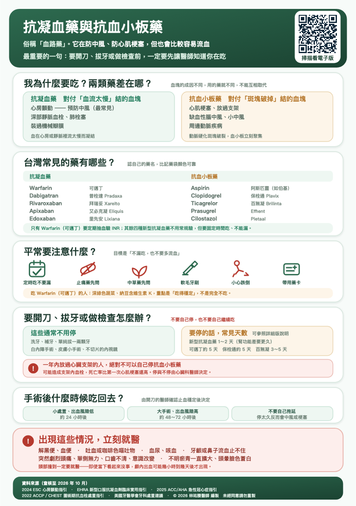

我為什麼要吃？兩類藥差在哪？
尚未播放
查看原始衛教圖卡

原稿來源與說明
資料來源（查核至 2026 年 10 月）：
2024 ESC 心房顫動指引；EHRA 新型口服抗凝血劑臨床實用指引；2025 ACC/AHA 急性冠心症指引；
2022 ACCP 與 CHEST 圍術期抗血栓處置指引；美國牙醫學會牙科處置建議。本單張供衛教，不取代個別診療。
© 2026 林祐賸醫師 編製 本單張僅供臨床衛教使用，未經同意請勿重製、改作或作商業用途。
尚未播放
